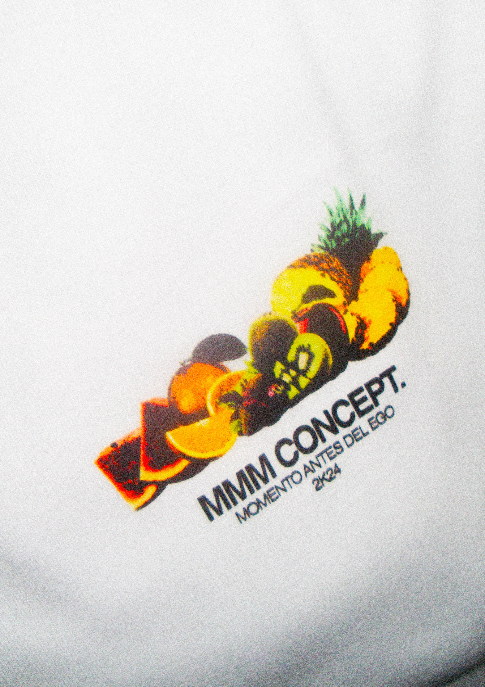
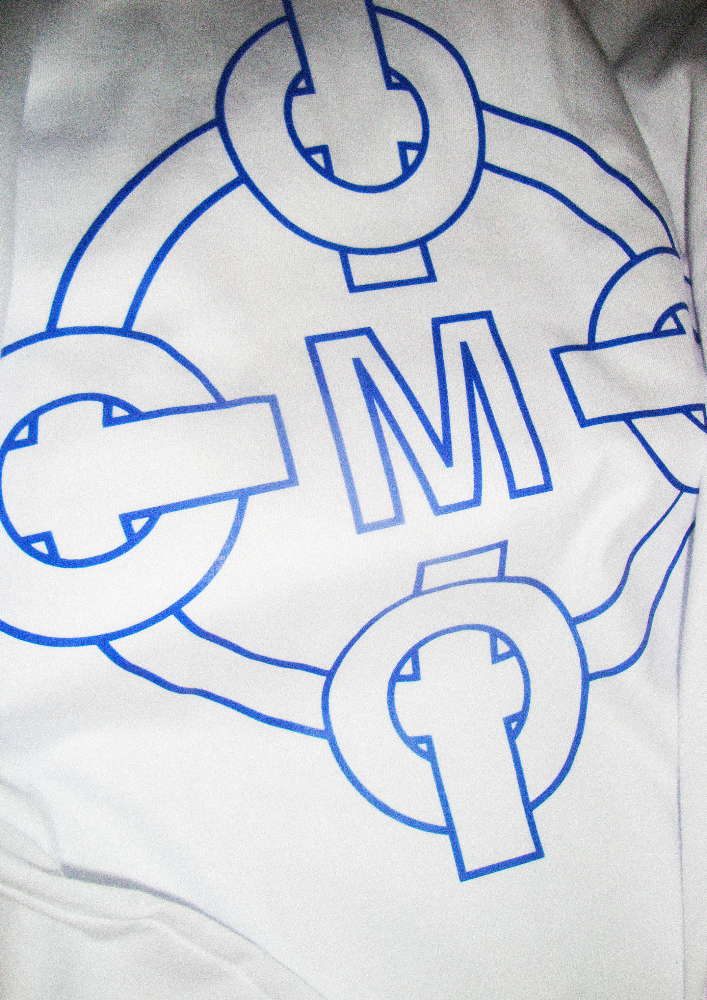
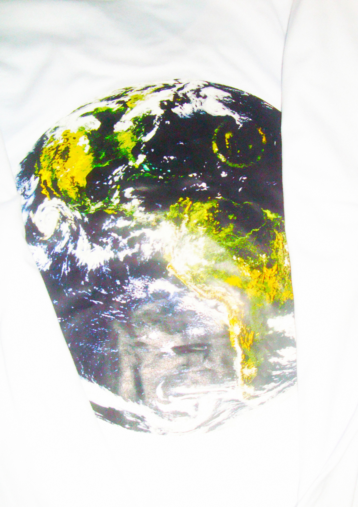

Bienvenidos a MAE
El final de todo mi proyecto 366*POSTERS. Quiero agradecer a los que estan aca
ya que con su apoyo pude hacer todo esto, son parte de todo esto,
Muchas gracias por sus interacciones y sus ideas, fueron fundamentales.
Como forma de agradecimiento quiero entregarles este ultimo proyecto llamado MAE que son las iniciales de "MOMENTO ANTES del EGO" Esto es un viaje introspectivo a una parte mas sincera de mi. Todo esto resumido en 3 remeras conceptuales donde cada una trabaja un concepto distinto de tratar el ego.
NAIVE SINCERITY/Sinceridad Ingenua
Esta remera habla del diseño de cada poster y como cuentan una historia, en veces, incompleta ya que nunca me atrevi a mostrarles lo que soy yo verdaderamente, por eso optaba por poner frases, que lejos de ser yo, hablan del momento que me encontraba en mi vida.
CADA LINEA CUENTA UNA HISTORIA QUE NO TERMINE
IRONY/Ironia
El concepto de esta remera va mas por la satira y el humor con el que trate cada diseño. Siempre me gusto tomarme esto con humor y afrontar cada obstaculo con el mismo como veran en algunos posters en los que confiezo que son relleno, ya que pasaba por bloqueos crativos tan fuertes que no me permitian tener una idea clara para hacer un poster. Y juega con mi ego de ser el mejor diseñador por eso siempre hice lo que queria.
QUIEN SE CREE IRREMPLAZABLE, ESTA EN CAMINO A SER OLVIDADO
POST-IRONY/Postironia
Hay muchos posters que fueron muy buenos y la gente no los vio como yo los vi, tal vez porque no eran genericos y tenian alma, siempre que hablo con un amigo le cuento que el arte sin alma, no es arte, Tengo el pensamiento de que cada pieza de arte que hagas tiene que tener alma, tiene que contar algo. En cuestion, esto es lo que expreso en esta remera, es el punto de hablar dejando el ego de lado y mostrar una parte mas sincera de como es mi vision.
EL PROBLEMA NO ES EL MUNDO, SINO QUE NO LO VEN COMO YO
Muchas gracias por sus interacciones y sus ideas, fueron fundamentales para lograr esto.




